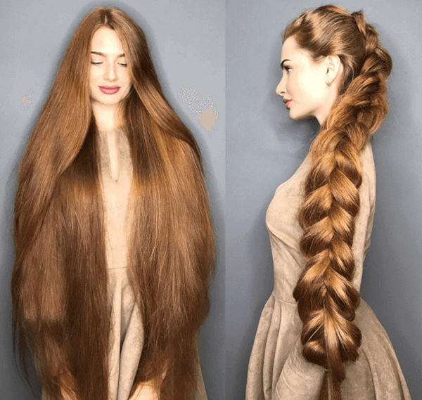
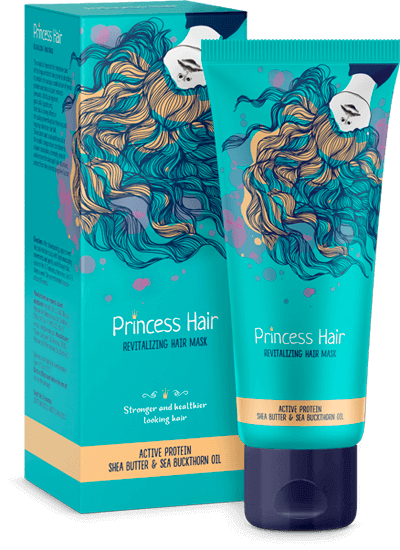
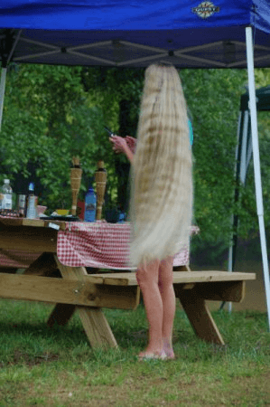
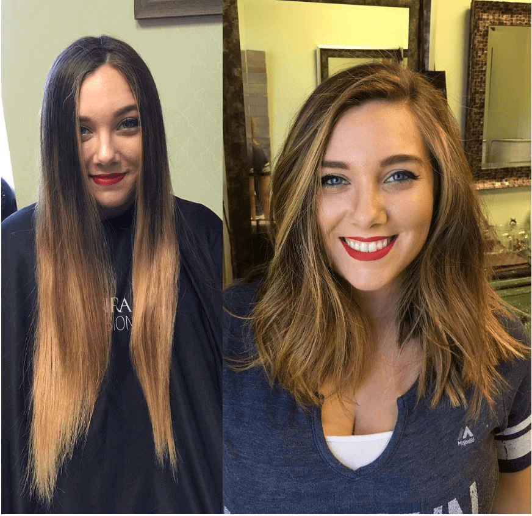
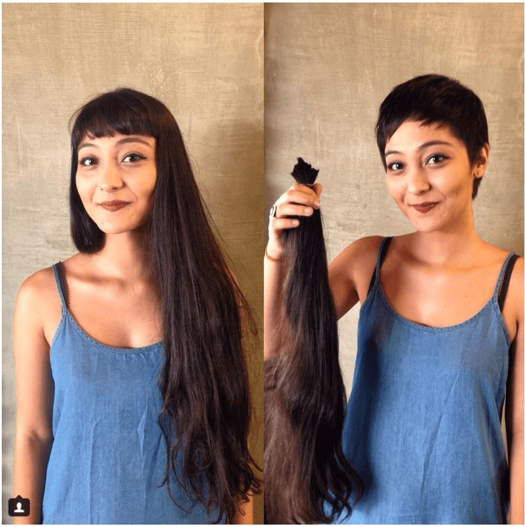
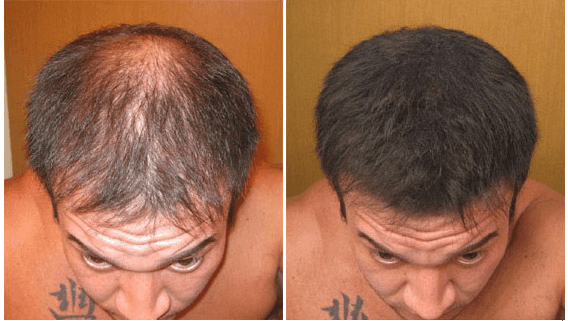

ДЕВУШКА СО 106СМ ВОЛОСАМИ РАССКАЗАЛА КАК ПОБЕДИЛА ОБЛЫСЕНИЕ
Анастасия Сидорова является новой звездой в диджитал пространстве. Перед такой русской красавицей сложно устоять. Мировые журналы окрестили Настю как «русскую Рапунцель». Все дело в том, что у этой девушки длинные, красивые рыжие волосы и ослепительная внешность.
Трудно не согласиться с таким понятием, так как Сидорова имеет потрясающие волосы огненного оттенка.
Однако, не так давно девушке ставили диагноз - алопеция. Это болезнь, при которой волосы выпадают целыми пучками, вызывая облысение.
Но, при помощи всего одного средства для волос, девушка все же смогла восстановить естественный рост волосяного покрова на своей голове. Более того, сейчас ее внешности может позавидовать любая красавица.
Рассказ Анастасии
Во время болезни и после
“Многие люди говорят, что волосы - это мой природный дар и «не стоит удивляться» тому, чем наградила природа. И знаете, что я вам отвечу?! Я не видела еще ни одного младенца с длинными волосами! Более того, четыре года назад случилось самое ужасное, что может произойти с волосами.
Мои волосы буквально начали выпадать целыми прядями!
Я сразу решила, что не хватает витаминов, но это оказалось не так. Приходилось мыть голову различными шампунями против выпадения волос практически 2 раза в день (хотя я считаю, что слишком частое мытье головы только вредит волосам).
За свой горький опыт мной было перепробовано, пожалуй, все, что только можно было попробовать: витамины для волос, шампуни, бальзамы, покупные и самодельные маски для волос. Перепробовала кучу народных советов…
Но ничего не помогало. Волосы продолжали выпадать и ломаться, а длина их была неизменна”.
Тогда девушка решила прибегнуть к помощи специалиста. Ей был назначен специальный курс восстановления волос, после которого ее жизнь кардинально изменилась.
Специалист указал, что большинство проблем с волосами возникает из-за неправильно подобранных средств по уходу. Поэтому, он прописал уникальное и универсальное средство, которое поможет справиться с проблемой выпадения волос и медленного роста - Princess Hair.
После того, как Настя заказала Princess Hair, ее внешний вид значительно изменился. Получив маску спустя всего 4 дня, Настя, не в силах ждать еще, тут же ею воспользовалась. Она уверяет, что все, что она пыталась сделать ДО этой маски с волосами, оказалось просто пустой тратой и времени и денег.
“Просто на влажные чистые волосы нанесла маску и выдержала не 10 минут (как написано в инструкции), а 20.” - делится девушка.
“Каково же было мое удивление, когда я ее смыла, и обнаружила на расческе значительно меньше волос.”
Princess Hair - маска настолько уникальная в своем составе, что заменяет все другие маски и шампуни в совокупности.
Так Настя нашла для себя свое маленькое чудо, которое спасло ее от ужасной болезни. А волосы растут до 4,5 см в месяц!
Вот разница фото всего 3 месяца
“Раньше уход за моими волосами составлял огромную часть времени, сейчас же, я трачу всего 20 минут после мытья головы 2 раза в неделю и имею шикарные волосы. Не знаю, мне кажется, что люди, которые до сих пор откладывают покупку Princess Hair просто теряют драгоценное время. Так что рекомендую всем читателям не ждать, пока волосы придут в ужаснейшее состояние, а заказывать Princess Hair прямо сейчас!”.
Комментарии
-
Аня|08.05.2018Какие шикарные волосы! Неужели действительно можно отрастить такие волосы? Для меня это на грани фантастики))) попробую-ка эту чудо-маску Princess Hair
-
Катя|08.05.2018Аня, заказывайте, не откладывайте на потом! Маска действительно работает. Вот моя шевелюра, которая отросла благодаря Princess Hair 
-
Света|08.05.2018я тоже поделюсь своим успехом. Разница всего в 3 месяца. С учетом того, что каждый месяц я еще делаю подравнивание волос на 1см 
-
Люба|09.05.2018Закажу эту маску бабушке. Чего только не перепробовали - ничего не помогает. Она жутко стесняется своего старческого облысения. Вот, буду надеяться, что поможет.
-
Таня|09.05.2018Я тоже пользуюсь Princess Hair. Сначала волосы отращиваю, потом стригусь )))) не могу ходить долго с одной длиной, с одной прической. А благодаря маске, можно не переживать, что придется долго отращивать волосы. В общем, я в восторге от нее. 
-
Оля|09.05.2018Расскажу свою историю. Учусь в колледже. Во времена сессий бывают жуткие стрессы, от чего раньше, в прямом смысле я прям лысела. Волосы выпадали клоками. Врачи только разводили руками и прописывали успокоительные. Конечно, ни одни антидепрессанты не вернут волосы. Первое время даже приходилось носить накладные пряди и наращивать, а потом наткнулась на эту волшебную маску. Как итог: волосы не только вернулись к прежнему состоянию, но и стали гуще. Сейчас таких ужасных потерь во время стресса нет. Девочки, у кого есть подобные проблемы - заказывайте Princess Hair, не пожалеете.
-
Настя|09.05.2018Да ну, не верю в такое. Вот не верю и все, ничто не может так ускорять рост волос. Это же сугубо личное.
-
Мила|10.05.2018Настя, прежде чем писать негативные отзывы, вы бы хоть попробовали. А то ваш скептицизм основан только на теории.
-
Лена|10.05.2018Я не знаю, не сказать, чтоб мои волосы от этой маски растут как ненормальные, но мне нравится, что они точно стали гуще, стали меньше сечься и выглядят более здоровыми.
-
Алексей|10.05.2018Не знаю, что я забыл на женском форуме, но не мог не написать отзыв по этому продукту. В 23 года я стал сильно лысеть. И знаете, это была не брутальная лысина, как у Вин Дизеля, а такая страшная, посередине головы, а по бокам легкие проплешины. В общем, каждое утро смотрелся в зеркало, как в страшный сон. спасибо моей жене, которая заказала мне эту маску. Сейчас я счастлив и абсолютно уверен в себе. 
-
Олеся|10.05.2018У меня был жуткий опыт наращивания волос. Девочки знают, что искусственные волосы “припаиваются” к своим у корней, создавая капсулу. У меня были густые, но короткие волосы, и я хотела, конечно, как можно быстрее иметь длинную косу. Так вот, когда я походила с нарощенными волосами месяц, от моей густой шевелюры остались только воспоминания. Я плакала, когда капсулы снимали, потому что это был ужас. Если бы не подружкина маска Princess Hair, я бы так и осталась лысой. Девочки, не наращивайте! Лучше маску закажите - эффективнее и дешевле будет! И навсегда!